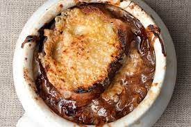

Onion Soup

Easy to make but delicious sweet soup with onions, cheese and toasted bread
Ingridients
- 6 big onions
- 4 tablespoons of oil
- 2 tablespoons of butter
- salt
- 8 cups of stock
- toast
- 1,5 cups grated cheese
- peel and slice onions
- caramelize teh onion with oil and butter
- add the stock and spices
- cook for 30 more minutes
- toast the bread
- put bread on the soup, add cheese and send to the oven until the cheese melts